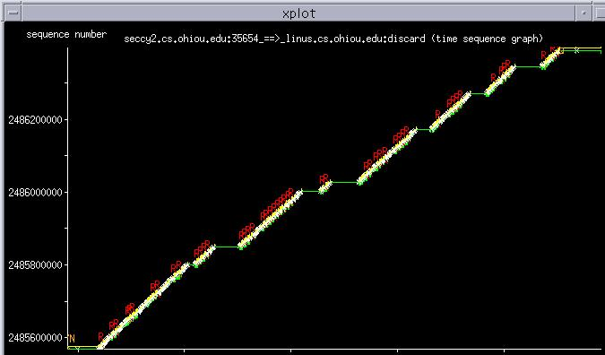
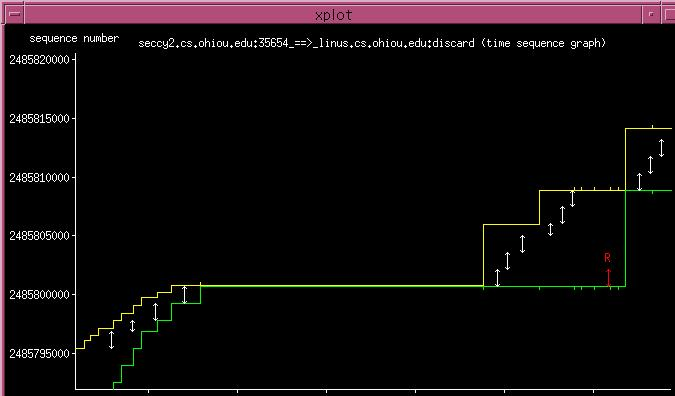
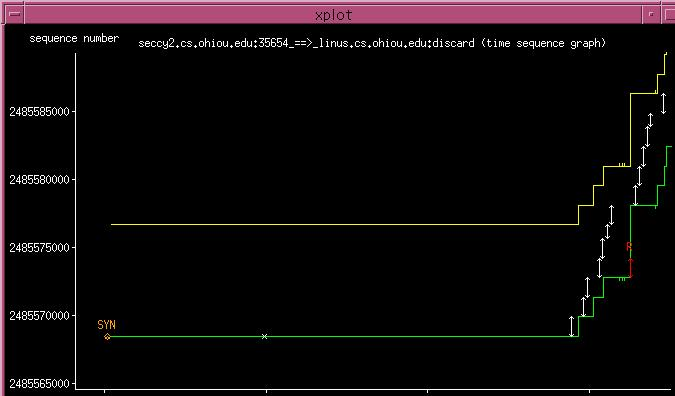
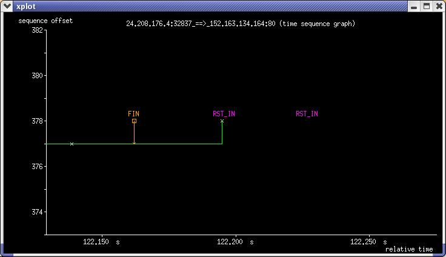

Time Sequence Graph
Time Sequence graphs show the general activity and events that happen
during the lifetime of a connection, and can be generated with the -S
option. These graphs are named as X2Y_tsg.xpl.
A sample Time Sequence graph is shown in Figure 5.1.
Figure 5.1:
Time Sequence Graph #1
|

|
The Y-axis represents sequence number space and the X-axis represents time,
and the slope of this curve gives the throughput over time.
A section of this graph (zoomed in with xplot) is shown in Figure 5.2
illustrating the following features.
Figure 5.2:
Time Sequence Graph #2
|

|
- Green Line keeps track of the ACK values received from the
other endpoint.
- Yellow Line tracks the receive window advertised from the
other endpoint. (It is drawn at the sequence number value corresponding
to the sum of the acknowledgment number and the receive window advertised
from the last ACK packet received.)
- Little Green Ticks track the duplicate ACKs received.
- Little Yellow Ticks track the window advertisements that were
the same as the last advertisement.
- White Arrows represent segments sent. The up and down arrows
represent the sequence numbers of the last and first bytes of the segment
respectively.
- Red Arrows (R) represent retransmitted segments with the
up and down arrows similarly representing the sequence numbers of the last
and first bytes of the segment.
Further zooming into the beginning of the connection with xplot we find
Figure 5.3.
Figure 5.3:
Time Sequence Graph #3
|

|
Here, the SYN marks the sequence number and the time when a SYN
packet was sent.
The graph shown in Figure 5.4 is a section of a TCP connection being
closed.
Figure 5.4:
Time Sequence Graph #4
|

|
Here,
- FIN marks a FIN segment sent in the direction.
- RST_IN, RST_OUT: When a RST segment is sent, a RST_OUT
is marked in the graph, and a RST_IN is marked in the Time
Sequence graph of the opposite direction of the connection.
- Little crosses (x) These are segments sent with zero TCP data
payload (the down and up arrows of the segment coincide, giving rise to a
cross).
The following other symbols also occur in Time Sequence graphs :
- O represents packets received out of order.
- HD represent Hardware Duplicates. Hardware Duplicates
correspond to link layer retransmissions found when a duplicate packet with
same IPv4 identification number and TCP sequence number as a previously
observed packet is seen.
- 3 indicates that the received ack packet was the triple
duplicate ack, commonly used as the threshold to trigger the TCP
fast retransmit/recovery algorithm.
- CWR / CE track Explicit Congestion Notification [3]
messages received.
CWR indicates that the Congestion Window Reduced flag was set in
the TCP header of the packet,
while the CE flag indicates that the Congestion Experienced code-point was
found in the IP header of the packet.
Super-User
2003-08-29